Ph.D. Dissertation

- Ph.D. Dissertation
- >
Ph.D. Dissertation
[12]
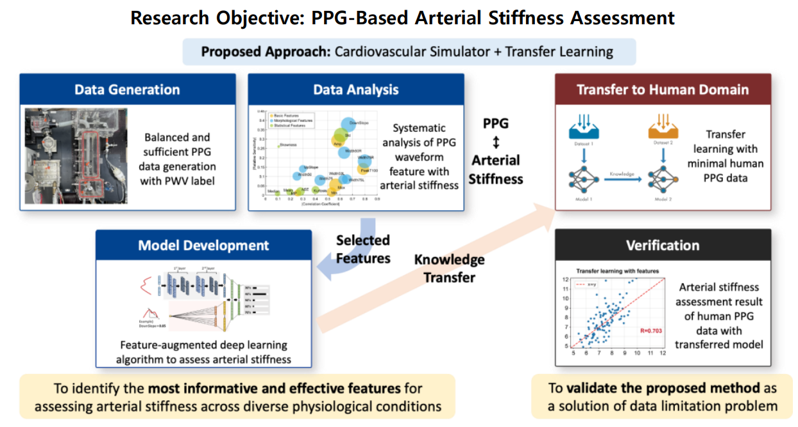
12. PPG신호 기반 혈관 건강 모니터링 방법 및 심혈관계 시뮬레이터와
전이학습을 이용한 임상 데이터 적용
PPG Signal-based Vascular Health Monitoring Method and
Its Application to clinical Data Using Cardiovascular Simulator
and Transfer Learning
이보미, 2026
[첨부파일]
[첨부파일][11]
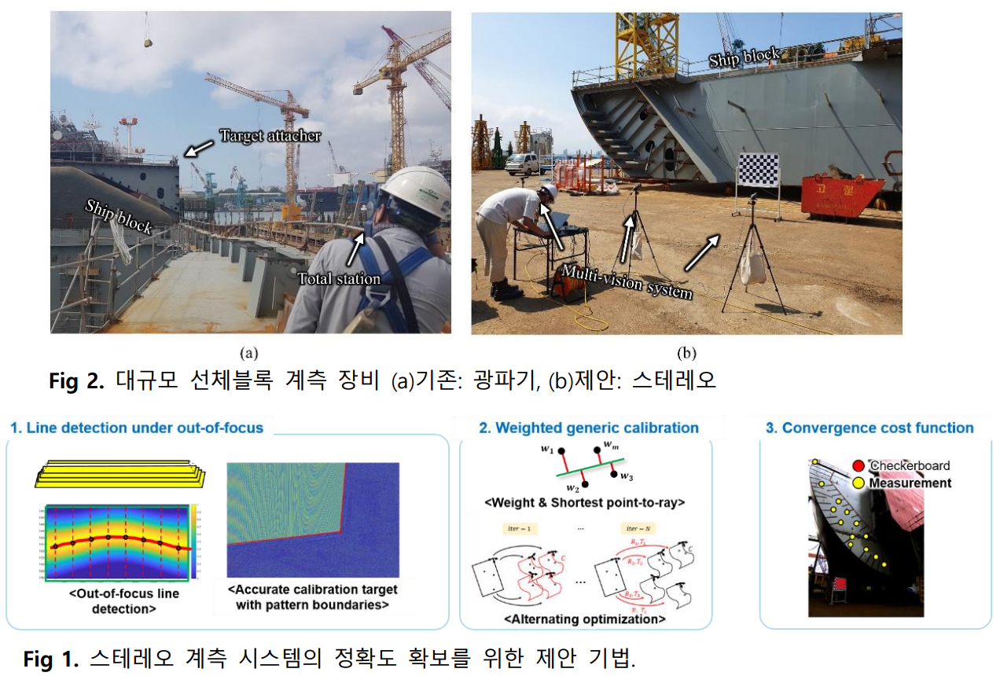
11. 스테레오 비전 기반 대규모 구조물의 3차원 고정밀 계측
방법에 관한 연구
High-precision 3D Measurement Method for Large-Scale
Structures Based on Stereo Vision
김정민, 2026
[첨부파일]
[첨부파일][10]
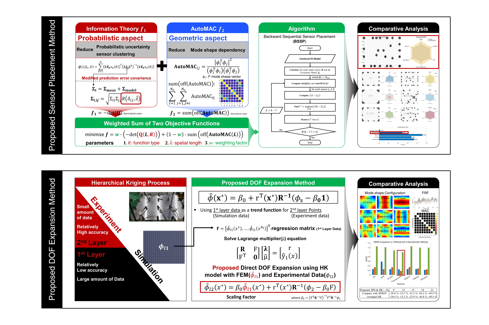
10. 고정밀도 디지털 트윈 구현을 위한 센서 배치 및 자유도 확장 기법
Sensor Placement and DOF Expansion Methods for the Realization
of a High-Precision Digital Twin
박강재, 2025
[첨부파일]
[첨부파일][9]
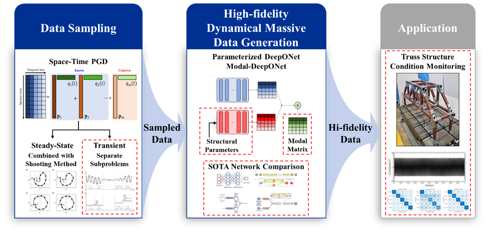
9. 적합일반화분해 및 심층연산자신경망 기반 생성형 모델을 활용한 동적시스템의 상태 모니터링
Proper Generalized Decomposition and DeepONet-based
Generative Model for Condition Monitoring of Dynamical Systems
임대근, 2025
[첨부파일]
[첨부파일][8]
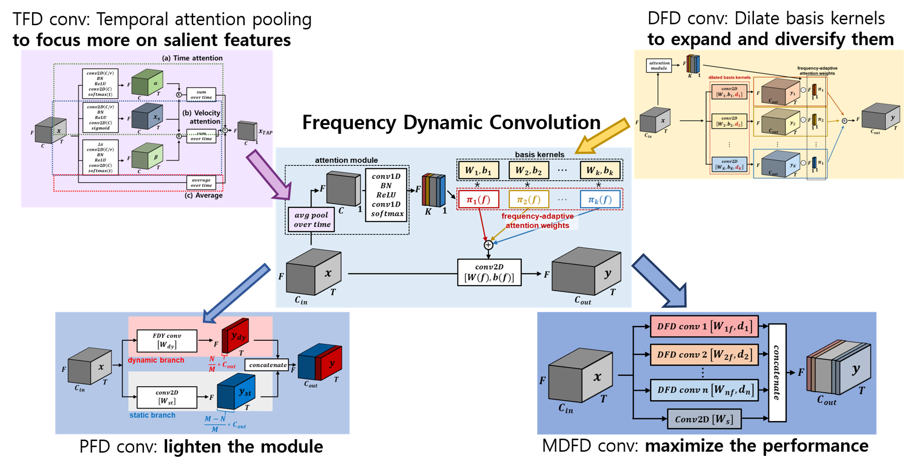
8. 음향 이벤트 검출을 위한 주파수 동적 컨볼루션
Frequency Dynamic Convolutions for Sound Event Detection
남현욱, 2025
[첨부파일]
[첨부파일][7]
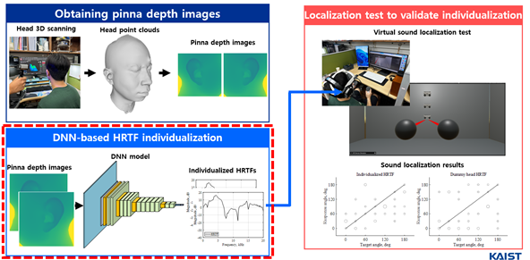
7. 귀 이미지를 이용한 딥러닝 기반 머리전달함수 개인화 및 음원 방향 추정에 적용
DNN-based HRTF Individualization Utilizing Pinna Images for
Accurate Sound Source Localization
고병윤, 2025
[첨부파일]
[첨부파일][6]
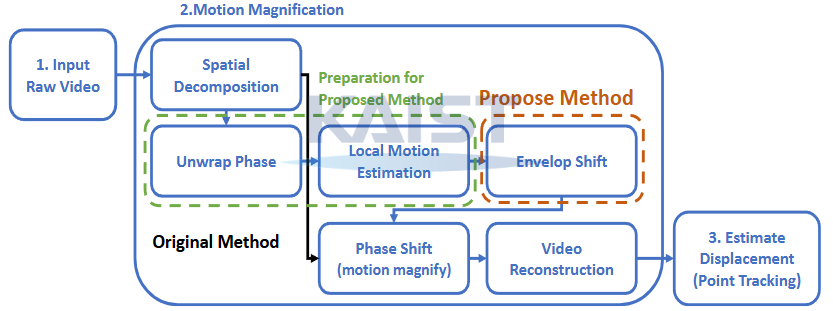
6. 비전 기반 진동 측정을 위한 향상된 비디오 모션 증폭 방법 및 모드 해석에의 적용
Enhanced video motion magnification method for vision-based
vibration measurement and its applications to modal analysis
이재덕, 2024
[첨부파일][5]
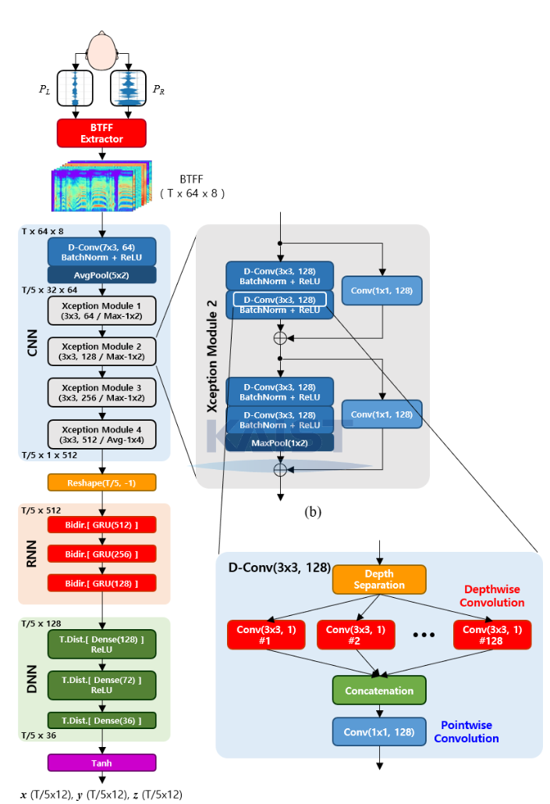
5. 인간형 로봇을 위한 머리전달함수 정위 단서 기반의 두 귀의 소리 사건 정위 및 감지 신경망
Binaural sound event localization and detection neural network
based on HRTF localization cues for humanoid robots
이경태, 2024
[첨부파일][4]
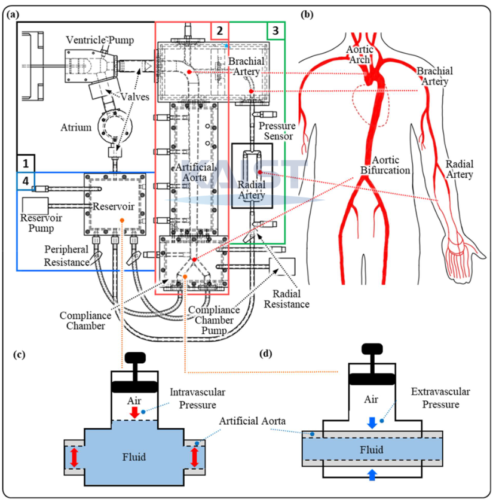
4. 인체 혈압파 재현을 위한 심혈관계 시뮬레이터 제작과 혈압파 데이터베이스 구축 및 심혈관 파라미터 역추정 방법
Fabrication of cardiovascular simulator for reproducing human blood
pressure waves, constructing blood pressure wave database, and inverse
estimation of cardiovascular parameters
정재학, 2024
[첨부파일][3]
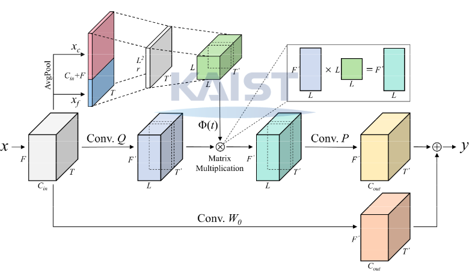
3. 비정상성을 고려한 시계열 데이터 분류를 위한 시간 동적 커널
기반 합성곱 신경망
Temporal dynamic convolutional neural network for time series
classification considering non-stationary process
김성후, 2024
[첨부파일][2]
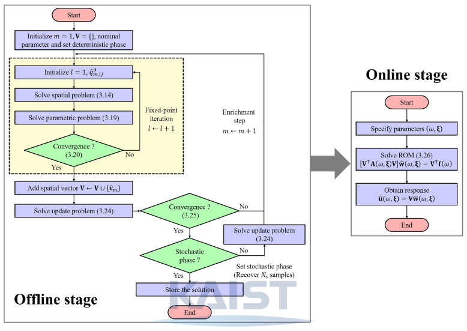
2. 다차원 주파수 응답 해석을 위한 적합 일반화 분해 기법
Proper generalized decomposition for multi-dimensional
frequency response analysis
이길용, 2023
[첨부파일][1]
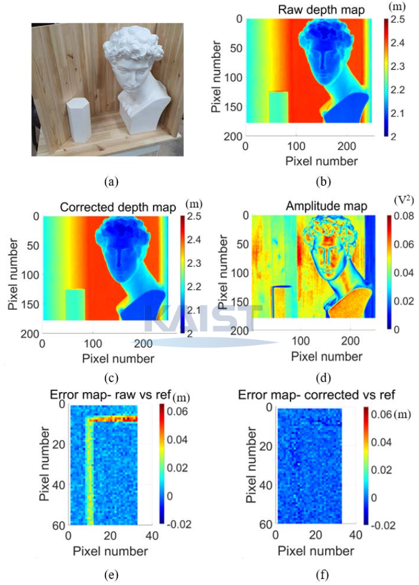
1. 연속파형 병렬 복조를 활용한 비행 시간 측정 스캐닝 라이다와 이미지 개선에 관한 연구
AMCW time-of-flight scanning LiDAR based on parallel-phase
demodulation and its image enhancements
이성현, 2023
[첨부파일]